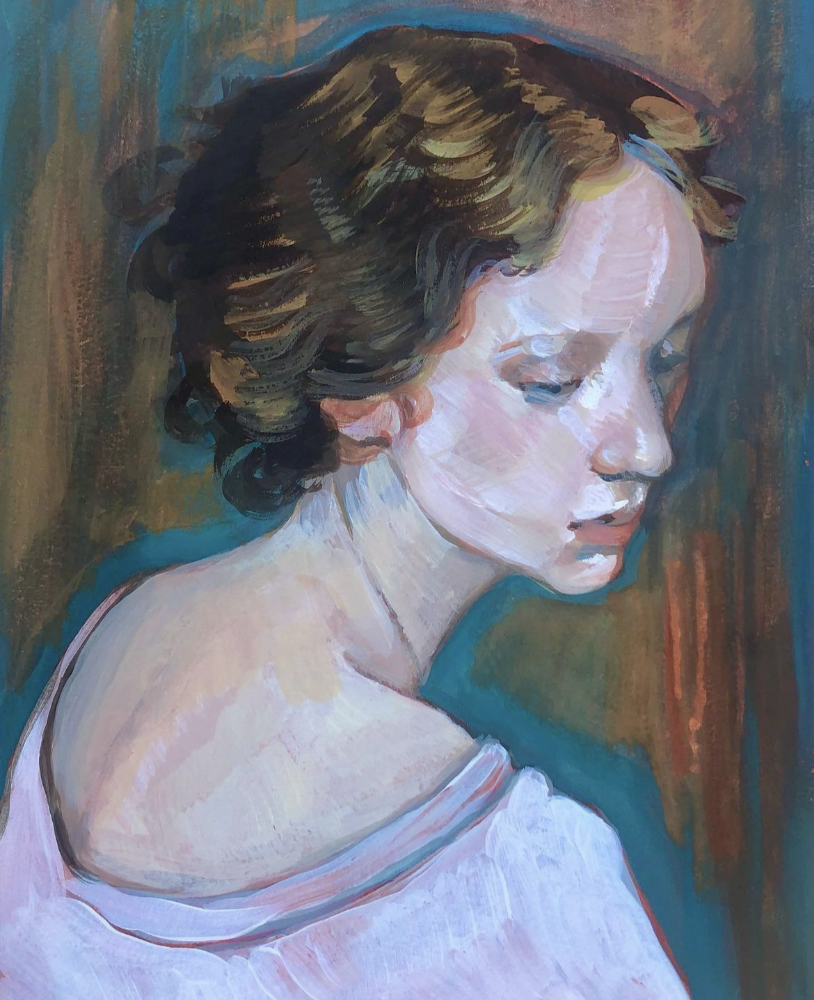
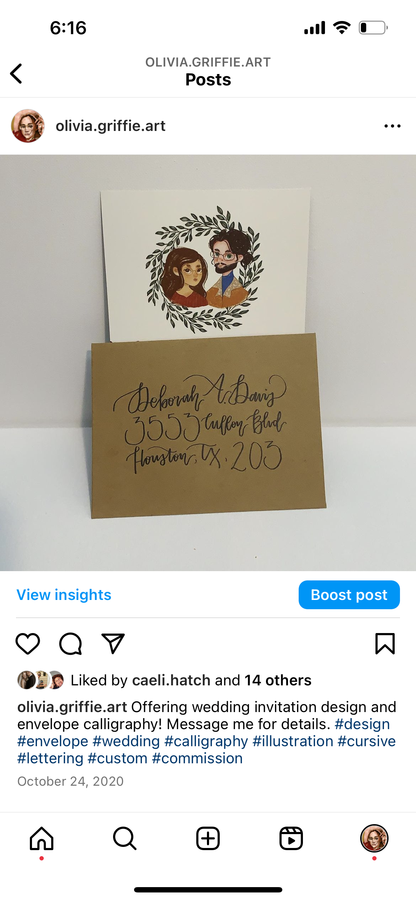
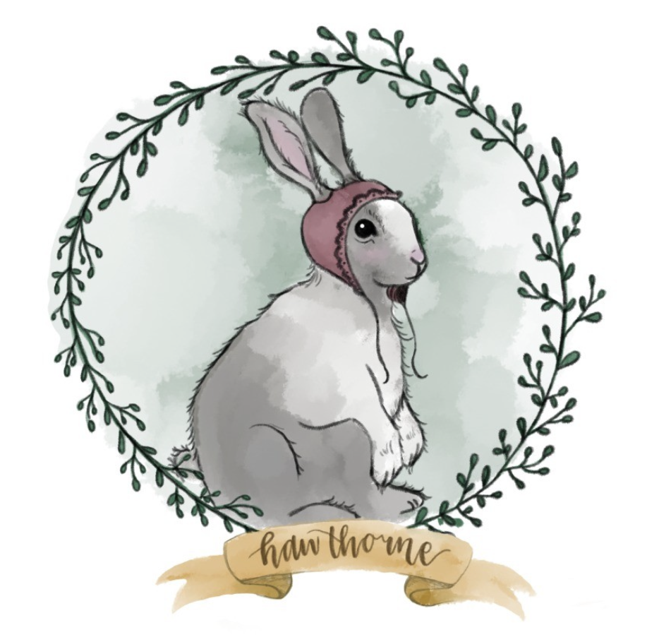
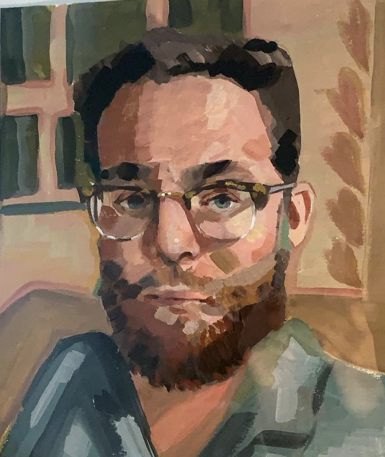
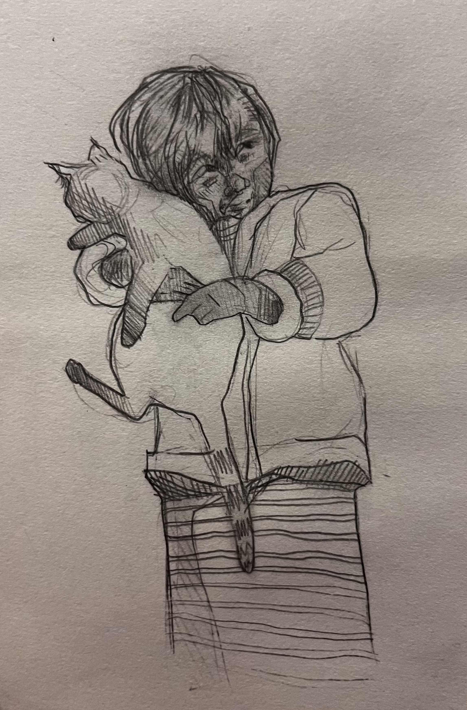
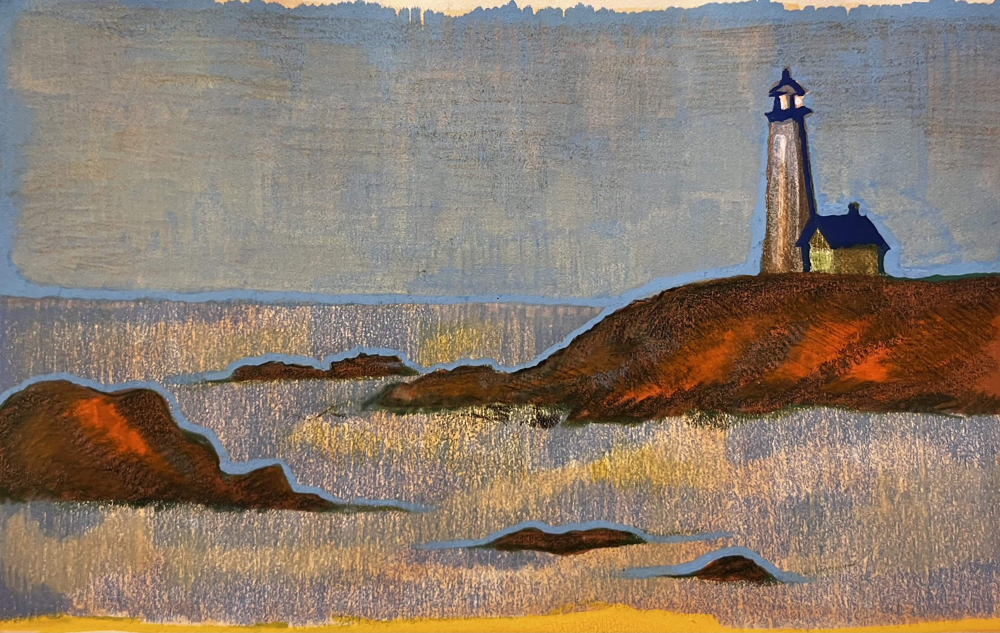
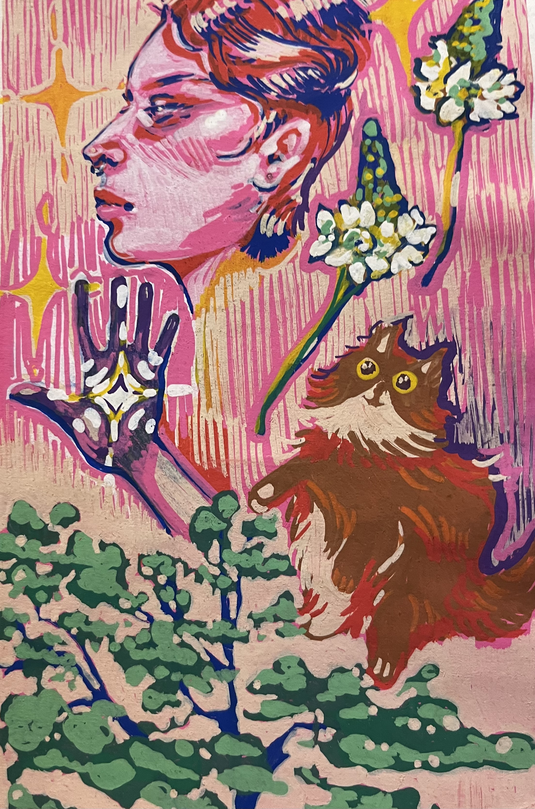

Character Design
Expressive digital character concept work focused on gesture, costume, and personality through clean linework.
- Procreate
- Pencil
This gallery brings together character work, portraits, invitation art, animal studies, and material-based explorations across both digital and physical media.
Expressive digital character concept work focused on gesture, costume, and personality through clean linework.

Painterly portrait study using layered color and soft edge control to build atmosphere and form.

Custom invitation artwork paired with envelope calligraphy for a more personal, hand-made wedding package.

Digital pet portrait illustration with a soft wreath frame and storybook-inspired treatment.

High-saturation portrait work exploring layered symbolism, graphic marks, and playful color contrast.

Traditional graphite drawing focused on gesture, value, and tender observational detail.

Landscape piece built through layered colored pencil texture and a quiet coastal palette.

Small botanical painting focused on color mixing, light shifts, and surface texture.

Marker-based illustration exploring bold surface color, quick layering, and graphic edge definition.